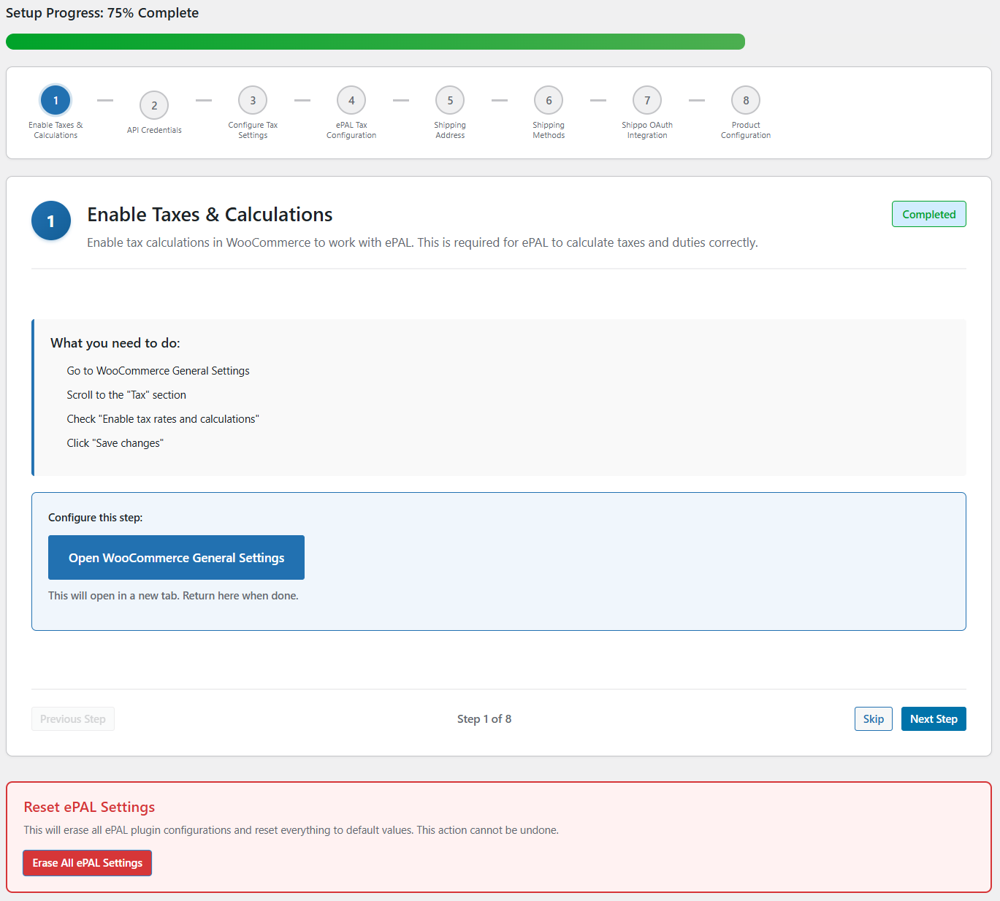
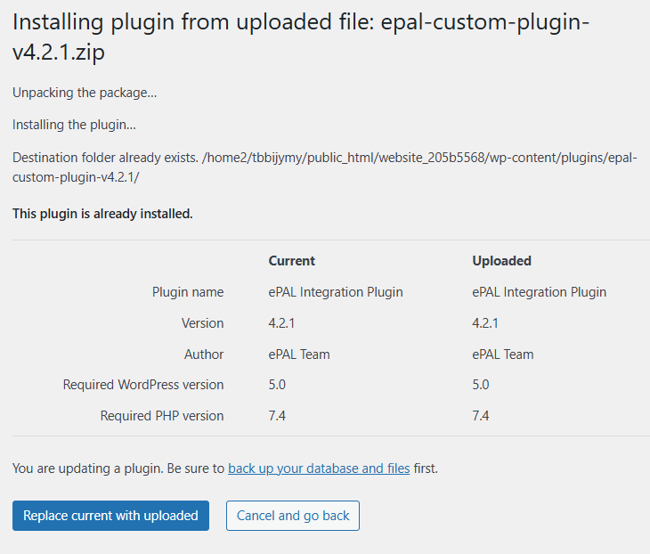

Removals and Reinstallations
This topic describes how to remove and reinstall the plugin.
Removing the Plugin
Reinstalling the Plugin
Resetting the Plugin
CAUTION:
Resetting the plugin will delete any values
saved from your previous installation.
When reinstalling the plugin, you are able to reset the values that have been saved for your last installation using the following UI:

Duplicate Installations
If you have already installed it, the following UI is displayed to inform you and ask if you want to proceed:
